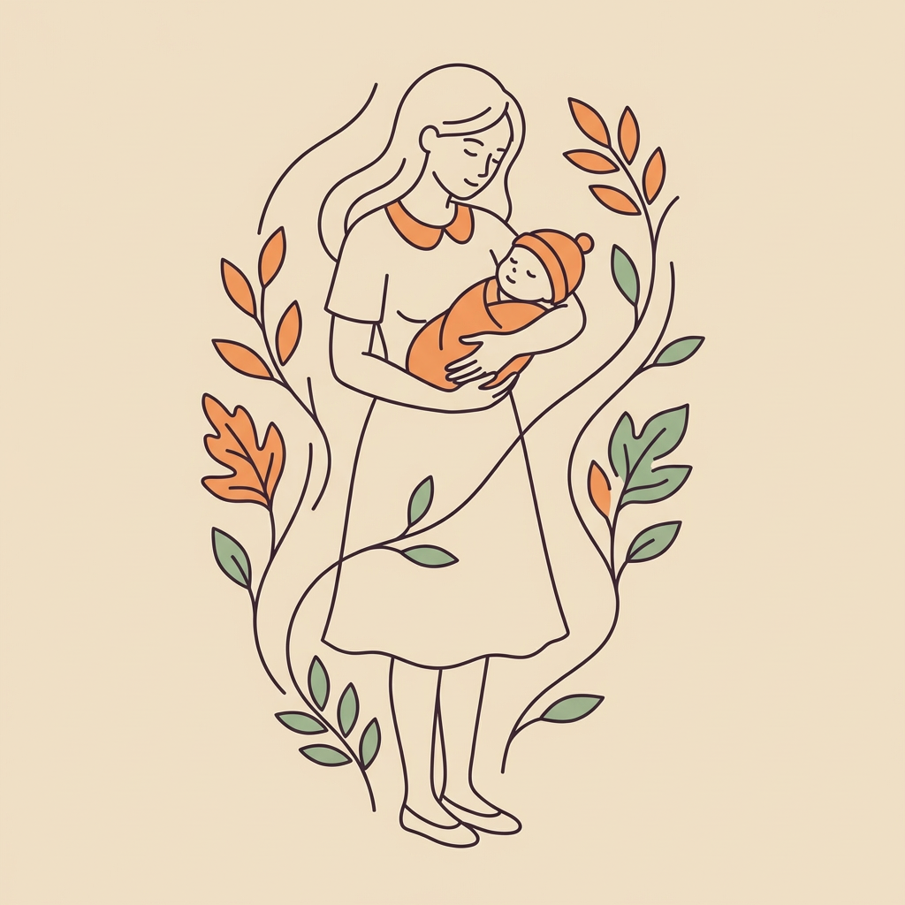

✓ 保存成功

EE和粽子
今天也要好好照顾自己和宝宝哦
3月13日 · 周四
小粽子
3个月15天
P58
6.2kg
↑ +280g 本周
EE
产后3个月
稳步恢复
55.3kg
↓ -0.8kg 本周
最近记录
3月13日
粽 6.2kg
EE 55.3kg
3月10日
粽 6.0kg
EE 55.8kg
3月6日
粽 5.8kg
EE 56.1kg

记录体重
抱着宝宝称一次，自己称一次
EE 抱着小粽子
kg
EE 单独称
kg
小粽子的体重
6.2kg
小粽子成长曲线
对比 WHO 婴儿体重标准
当前体重
6.2kg
WHO P58
月增长
+0.6kg
健康增长 ✓
出生体重
3.3kg
P52
总增长
+2.9kg
3个月
P3–P97
P15–P85
P50
小粽子
EE的体重趋势
记录每一步进步
当前体重
55.3kg
最近一次
产后初始
60.2kg
12月1日
总变化
-4.9kg
3个月 ↓
周均变化
-0.4kg
稳步恢复 ✓
记录历史
3月13日 周四
总重 61.5kg
·
EE 55.3kg
6.2kg
· 小粽子
3月10日 周一
总重 61.8kg
·
EE 55.8kg
6.0kg
· 小粽子
3月6日 周四
总重 61.9kg
·
EE 56.1kg
5.8kg
· 小粽子
2月28日 周五
总重 62.0kg
·
EE 56.5kg
5.5kg
· 小粽子
2月20日 周四
总重 62.3kg
·
EE 57.1kg
5.2kg
· 小粽子
2月10日 周一
总重 62.5kg
·
EE 57.8kg
4.7kg
· 小粽子